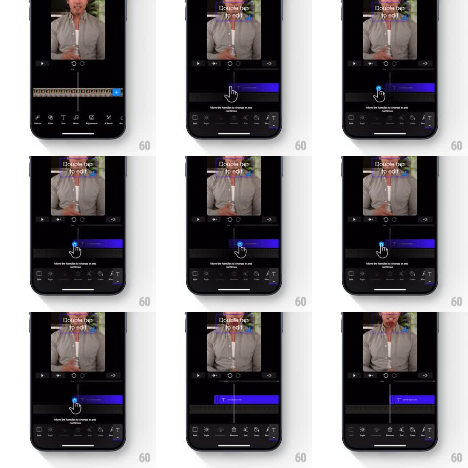

Media
Frame-by-frame

Rebuild this animation 1:1: Riveo's trim-handles tutorial - a simulated hand cursor appears over the timeline, grabs a clip's handle, and drags it to demonstrate trimming, with a tooltip explaining the gesture.

Rebuild this animation 1:1: Riveo's trim-handles tutorial - a simulated hand cursor appears over the timeline, grabs a clip's handle, and drags it to demonstrate trimming, with a tooltip explaining the gesture. ## Integration Integration: stack-agnostic spec - springs given as stiffness/damping, timed motions as duration + curve; map every value to your framework and animation library of choice. ## Scene Riveo's dark editor: video preview on top with a "Double tap to edit" overlay, transport controls, and a timeline with a purple text clip. A tooltip reads "Move the handles to change in and out times". A simulated hand cursor fades in over the clip's edge handle, presses, and drags the handle along the track, the clip resizing with it. ## Motion spec Pattern: guided gesture demo loop, ~4s per pass. - The hand cursor fades in over the clip's end handle (300ms) and presses (slight scale down to 0.9, 150ms). - The hand drags the handle left along the track (1s, ease-in-out); the clip's edge follows 1:1, the clip shrinking, and the playhead time readout updates. - The hand releases (scale back to 1, 150ms) and fades out (300ms); the clip stays at its new length. - The sequence loops: the clip restores and the demo replays while the tooltip remains up. ## Calibration - The hand is a clearly synthetic pointer (soft drop shadow, no skin texture) - a demo affordance, not a real touch. - The drag speed is deliberate and constant - slow enough to follow. ## Reduced motion The clip length changes in a single fade between two states. ## Don't miss - Only the handle under the hand moves; the clip's other edge stays pinned. - The tooltip text stays visible for the whole demo.